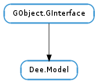

| Subclasses: | Dee.SerializableModel |
|---|
| append_row(row_members) | |
| clear() | |
| clear_tag(iter, tag) | |
| find_row_sorted(row_spec, cmp_func, *user_data) | |
| get_bool(iter, column) | |
| get_column_schema(column) | |
| get_double(iter, column) | |
| get_first_iter() | |
| get_int32(iter, column) | |
| get_int64(iter, column) | |
| get_iter_at_row(row) | |
| get_last_iter() | |
| get_n_columns() | |
| get_n_rows() | |
| get_position(iter) | |
| get_row(iter) | |
| get_schema() | |
| get_string(iter, column) | |
| get_tag(iter, tag) | |
| get_uchar(iter, column) | |
| get_uint32(iter, column) | |
| get_uint64(iter, column) | |
| get_value(iter, column) | |
| insert_row(pos, row_members) | |
| insert_row_before(iter, row_members) | |
| insert_row_sorted(row_members, cmp_func, *user_data) | |
| is_first(iter) | |
| is_last(iter) | |
| next(iter) | |
| prepend_row(row_members) | |
| prev(iter) | |
| register_tag(tag_destroy) | |
| remove(iter) | |
| set_row(iter, row_members) | |
| set_schema_full(column_schemas) | |
| set_tag(iter, tag, value) | |
| set_value(iter, column, value) |
None
| Name | Parameters | Return | Description |
|---|---|---|---|
| row-added | Dee.ModelIter | Connect to this signal to be notified when a row is added to self. | |
| row-changed | Dee.ModelIter | Connect to this signal to be notified when a row is changed. | |
| row-removed | Dee.ModelIter | Connect to this signal to be notified when a row is removed from self. The row is still valid while the signal is being emitted. |
Bases: GObject.GInterface
| Parameters: | row_members ([GLib.Variant]) – An array of GLib.Variants with type signature matching those of the column schemas of self. If any of the variants have floating references they will be consumed |
|---|---|
| Returns: | A Dee.ModelIter pointing to the new row |
| Return type: | Dee.ModelIter |
Like Dee.Model.append () but intended for language bindings or situations where you work with models on a meta level and may not have a prior knowledge of the column schemas of the models. See also Dee.Model.build_row ().
Removes all rows in the model. Signals are emitted for each row in the model
| Parameters: |
|
|---|
This method is purely syntactic sugar for calling Dee.Model.set_tag () with a value of None. It’s included in order to help developers write more readable code.
| Parameters: |
|
|---|---|
| Returns: | If out_was_found is set to True then a Dee.ModelIter pointing to the first matching row. If it is False then the iter pointing to the row just after where row_spec_would have been inserted. |
| Return type: | Dee.ModelIter, out_was_found: bool |
Finds a row in self according to the sorting specified by cmp_func. This method will assume that self is already sorted by cmp_func.
If you use this method for searching you should only use Dee.Model.insert_row_sorted () to insert rows in the model.
| Parameters: |
|
|---|---|
| Returns: | if iter and column are valid, the boolean stored at column. Otherwise False |
| Return type: |
| Parameters: | column (int) – the column to get retrieve the GLib.Variant type string of |
|---|---|
| Returns: | the GLib.Variant signature of the column at index column |
| Return type: | str |
Get the GLib.Variant signature of a column
| Parameters: |
|
|---|---|
| Returns: | if iter and column are valid, the double stored at column. Otherwise 0. |
| Return type: | float |
| Returns: | A Dee.ModelIter (owned by self, do not free it) |
|---|---|
| Return type: | Dee.ModelIter |
Retrieves a Dee.ModelIter representing the first row in self.
| Parameters: |
|
|---|---|
| Returns: | if iter and column are valid, the int stored at column. Otherwise 0. |
| Return type: |
| Parameters: |
|
|---|---|
| Returns: | if iter and column are valid, the int64 stored at column. Otherwise 0. |
| Return type: |
| Parameters: | row (int) – position of the row to retrieve |
|---|---|
| Returns: | A new Dee.ModelIter, or None if row was out of bounds. The returned iter is owned by self, so do not free it. |
| Return type: | Dee.ModelIter |
Retrieves a Dee.ModelIter representing the row at the given index.
Note that this method does not have any performance guarantees. In particular it is not guaranteed to be O(1).
| Returns: | A Dee.ModelIter (owned by self, do not free it) |
|---|---|
| Return type: | Dee.ModelIter |
Retrieves a Dee.ModelIter pointing right after the last row in self. This is refered to also the the end iter.
As with other iters the end iter, in particular, is stable over inserts, changes, or removals.
| Returns: | the number of columns per row in self |
|---|---|
| Return type: | int |
Gets the number of columns in self
| Parameters: | iter (Dee.ModelIter) – The iter to get the position of |
|---|---|
| Returns: | The integer offset of iter in self |
| Return type: | int |
Get the numeric offset of iter into self. Note that this method is not guaranteed to be O(1).
| Parameters: | iter (Dee.ModelIter) – A Dee.ModelIter pointing to the row to get |
|---|---|
| Returns: | out_row_members if it was not None or a newly allocated array otherwise which you must free with GLib.free (). The variants in the array will have a strong reference and needs to be freed with GLib.Variant.unref (). |
| Return type: | [GLib.Variant], out_row_members: [GLib.Variant] |
| Returns: | A None-terminated array of GLib.Variant type strings. The length of the returned array is written to num_columns. The returned array should not be freed or modified. It is owned by the model. |
|---|---|
| Return type: | [str] |
Get a None-terminated array of GLib.Variant type strings that defines the required formats for the columns of self.
| Parameters: |
|
|---|---|
| Returns: | if iter and column are valid, the string stored at column. Otherwise None. |
| Return type: |
| Parameters: |
|
|---|---|
| Returns: | Returns None if tag is unset otherwise the value of the tag as it was set with Dee.Model.set_tag (). |
| Return type: |
Look up a tag value for a given row in a model. This method is guaranteed to be O(1).
| Parameters: |
|
|---|---|
| Returns: | if iter and column are valid, the uchar stored at column. Otherwise 0. |
| Return type: |
| Parameters: |
|
|---|---|
| Returns: | if iter and column are valid, the uint stored at column. Otherwise 0. |
| Return type: |
| Parameters: |
|
|---|---|
| Returns: | if iter and column are valid, the uint64 stored at column. Otherwise 0. |
| Return type: |
| Parameters: |
|
|---|---|
| Returns: | A, guaranteed non-floating, reference to a GLib.Variant containing the row data. Free with GLib.Variant.unref (). |
| Return type: |
| Parameters: |
|
|---|---|
| Returns: | A Dee.ModelIter pointing to the new row |
| Return type: |
As Dee.Model.insert (), but intended for language bindings or situations where you work with models on a meta level and may not have a priori knowledge of the column schemas of the models. See also Dee.Model.build_row ().
| Parameters: |
|
|---|---|
| Returns: | A Dee.ModelIter pointing to the new row |
| Return type: |
As Dee.Model.insert_before (), but intended for language bindings or situations where you work with models on a meta level and may not have a priori knowledge of the column schemas of the models. See also Dee.Model.build_row ().
| Parameters: |
|
|---|---|
| Returns: | A Dee.ModelIter pointing to the new row |
| Return type: |
Inserts a row in self according to the sorting specified by cmp_func. If you use this method for insertion you should not use other methods as this method assumes the model to be already sorted by cmp_func.
| Parameters: | iter (Dee.ModelIter) – a Dee.ModelIter |
|---|---|
| Returns: | True if iter is the first iter in the model |
| Return type: | bool |
Checks if iter is the very first iter self.
| Parameters: | iter (Dee.ModelIter) – a Dee.ModelIter |
|---|---|
| Returns: | True if iter is the last iter in the model |
| Return type: | bool |
Whether iter is the end iter of self. Note that the end iter points right after the last valid row in self.
| Parameters: | iter (Dee.ModelIter) – a Dee.ModelIter |
|---|---|
| Returns: | A Dee.ModelIter, pointing to the next row in the model. The iter is owned by self, do not free it. |
| Return type: | Dee.ModelIter |
Returns a Dee.ModelIter that points to the next position in the model.
| Parameters: | row_members ([GLib.Variant]) – An array of GLib.Variants with type signature matching those of the column schemas of self. If any of the variants have floating references they will be consumed. |
|---|---|
| Returns: | A Dee.ModelIter pointing to the new row |
| Return type: | Dee.ModelIter |
Like Dee.Model.prepend () but intended for language bindings or situations where you work with models on a meta level and may not have a priori knowledge of the column schemas of the models. See also Dee.Model.build_row ().
| Parameters: | iter (Dee.ModelIter) – a Dee.ModelIter |
|---|---|
| Returns: | A Dee.ModelIter, pointing to the previous row in the model. The iter is owned by self, do not free it. |
| Return type: | Dee.ModelIter |
Returns a Dee.ModelIter that points to the previous position in the model.
| Parameters: | tag_destroy (GLib.DestroyNotify) – Function called when a tagged row is removed from the model. This function will also be called on all tagged rows when the model is finalized. |
|---|---|
| Returns: | A Dee.ModelTag handle that you can use to set and get tags with |
| Return type: | Dee.ModelTag |
Register a new tag on a Dee.Model. A tag is an extra value attached to a given row on a model. The tags are invisible to all that doesn’t have the tag handle returned by this method. Dee.Model implementations must ensure that Dee.Model.get_tag () is an O(1) operation.
Tags can be very useful in associating some extra data to a row in a model and have that automatically synced when the model changes. If you’re writing a tiled view for a model you might want to tag each row with the tile widget for that row. That way you have very convenient access to the tile widget given any row in the model.
The private nature of tags and the fact that you can store arbitrary pointers and binary data in them also means that they are not serialized if you utilize a model implementation that exposes the Dee.Serializable interface.
| Parameters: | iter (Dee.ModelIter) – a Dee.ModelIter pointing to the row to remove |
|---|
Removes the row at the given position from the model.
| Parameters: |
|
|---|
Sets all columns in the row iter points to, to those found in row_members. The variants in row_members must match the types defined in the model’s schema.
| Parameters: | column_schemas ([str]) – A list of GLib.Variant type strings terminated by a None |
|---|
Set the GLib.Variant types and the number of columns used by self. This method must be called exactly once before using self. Note that some constructors will do this for you.
| Parameters: |
|
|---|
Set a tag on a row in a model. This function is guaranteed to be O(1). See also Dee.Model.register_tag ().
If tag is already set on this row the existing tag value will be destroyed with the GLib.DestroyNotify passed to the Dee.Model.register_tag ().
| Parameters: |
|
|---|
Sets the data in column for the row iter points to, to value. The type of value must be convertible to the type of the column.
When this method call completes the model will emit ::row-changed. You can edit the model in place without triggering the change signals by calling dee_model_set_value_silently().